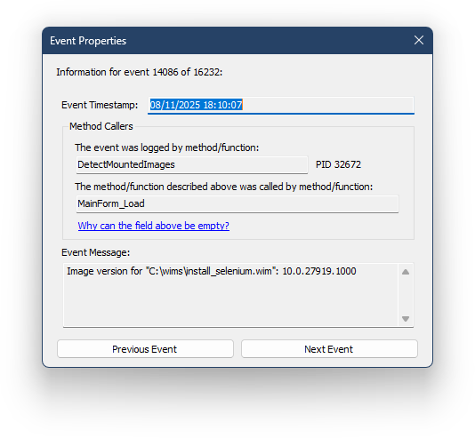

The DynaLog Log Viewer
The DynaLog Log Viewer (DynaViewer) is a tool that allows you to view and analyze diagnostic logs generated by DISMTools. It can be accessed from one of the following locations:
- By going to Help > Open diagnostic logs in log viewer
- Independently, by opening
DynaViewer.exelocated in<program directory>\tools\DynaLogViewer
You should see the following window:

Usage
When you launch the DynaLog Log Viewer, you will be able to open a log file. Use the "Open" button on the window to select a log file to view.
The main log file is DT_DynaLog.log. DynaLog will back up log files that are older than 2 weeks. Both the main log file and the backups are located in <program directory>\logs.
You can also invoke the DynaLog Log Viewer from the command line. More about that in the Command line usage section.
After the log file is loaded, you can get the following information:
- Timestamps of each log entry in UTC
- Process ID to help tell multiple processes apart
- Main/Parent Method Callers
- Message that contains what happened
You can get more information about each entry by double-clicking it. This will open a new window with the following information:

If the file was externally modified, you can refresh the log file by clicking the "Refresh" button.
It's recommended that you use the DynaLog Log Viewer in the event of a problem. In the case of an internal program error, DISMTools will attempt to copy the latest log file to your desktop. DynaLog log files are recommended to be sent to us to help us diagnose the issue even further.
DynaLog Log Viewer can also be used to view logs from other programs that use the DynaLog logging framework, that can easily be implemented in your preferred programming language.
Running on older versions of Windows
DISMTools includes 2 versions of the Log Viewer that contain the same feature set but target different frameworks:
- The main version targets .NET 4.8 and works on Windows 7 SP1 and later (except Windows 10 1507/1511). The source code of this version is available on the GitHub repository
- An alternative version targets .NET 2 and works on operating systems as old as Windows 98 Second Edition. The source code of this version is available as a ZIP file in the repository
Command line usage
The command line arguments of the DynaLog Log Viewer are as follows:
DynaViewer.exe "file" [options]
Options
/selectfirst=<n>- Selects the first n entries of the log file/selectlast=<n>- Selects the last n entries of the log file. In the event of an internal error, DISMTools will use this option to select enough entries to include error information and the last entries before it
DynaLog Logging
In DynaLog, an event includes the following information:
[Timestamp] [Process ID] [Main Method Caller (Parent Method)] Message
In the DISMTools repository, you can find the source code of DynaLog. Then, you can port it to your preferred language. The DynaLog logging format may change in the future, so it is recommended that you adapt your reporting code to work correctly with the Log Viewer when it parses new items.
To log an event, call the LogMessage method like this:
DynaLog.LogMessage("This is a log message");
The parent method can be explicitly ignored in the event by setting the second parameter in LogMessage to false:
DynaLog.LogMessage("This is a log message with parent ignored", false);
DynaLog can also be temporarily disabled by calling DisableLogging and re-enabled by calling EnableLogging. Use or present this option to the end-user only if the system is experiencing performance issues.
Format Version History
| Version | Used by DISMTools versions | Changes |
|---|---|---|
| 1.0.2 | 0.7 Preview 5+, 0.6.2 Update 2+ | Added process ID (PID) field |
| 1.0.1 | 0.7 Preview 1 - Preview 4, 0.6.2 Update 1 | Invariant culture for date representations, DynaViewer added |
| 1.0 | 0.6.1 - 0.6.2 (Release) | Logging added to entire codebase, write speeds improved from previous version |
| 0.6 | 0.6 | Initial version to implement the foundations; not used in many places |